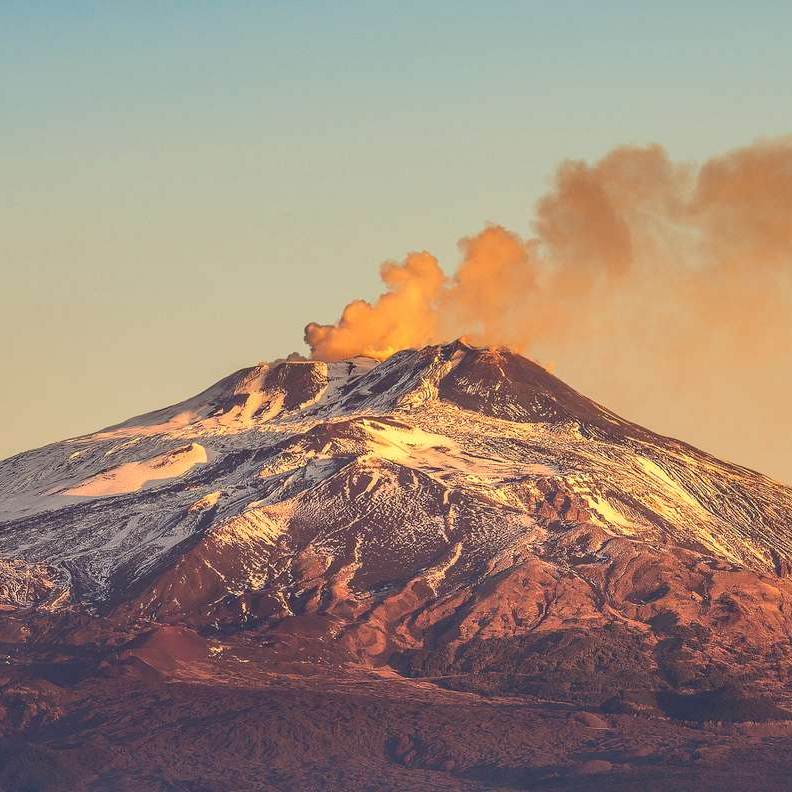

Колизей — амфитеатр, памятник архитектуры Древнего Рима, наиболее известное и одно из самых грандиозных сооружений Древнего мира, сохранившихся до нашего времени. Находится в Риме, в низине между Эсквилинским, Палатинским и Целиевым холмами.
Этна — стратовулкан в Италии, на восточном побережье Сицилии[1][2], недалеко от городов Мессина и Катания. Самый высокий действующий вулкан в Европе[1]. Максимальная высота Этны меняется в результате извержений и обрушений в промежутках между ними.

Фонта́н Тре́ви — самый крупный фонтан Рима; вместе с фасадом примыкающего к нему здания, являющийся частью величественной архитектурно-скульптурной композиции в стиле позднего римского барокко с элементами неоклассицизма. Фонтан построен в 1732—1762 годах по проекту архитектора Николо Сальви

Пиза́нская ба́шня— колокольная башня, часть ансамбля городского собора Санта-Мария-Ассунта в городе Пиза, получившая всемирную известность благодаря непреднамеренному наклону.Расположена позади собора, является третьей старейшей постройкой на Площади чудес Пизы после самого собора и баптистерия.